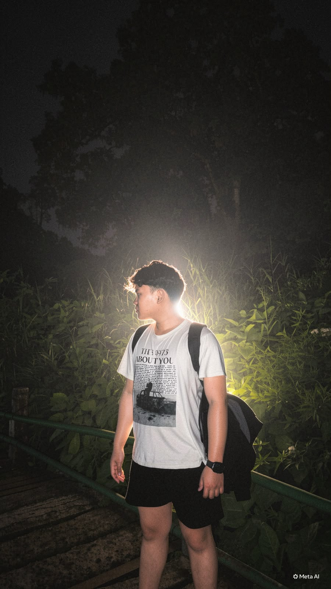
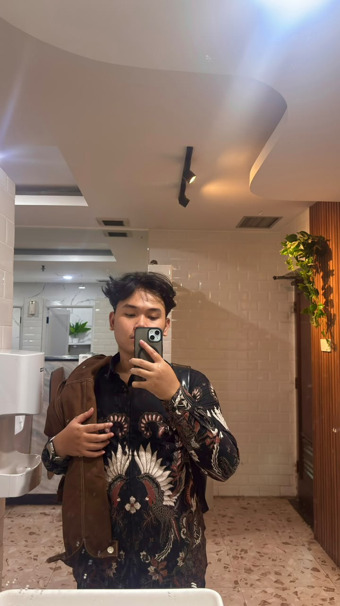
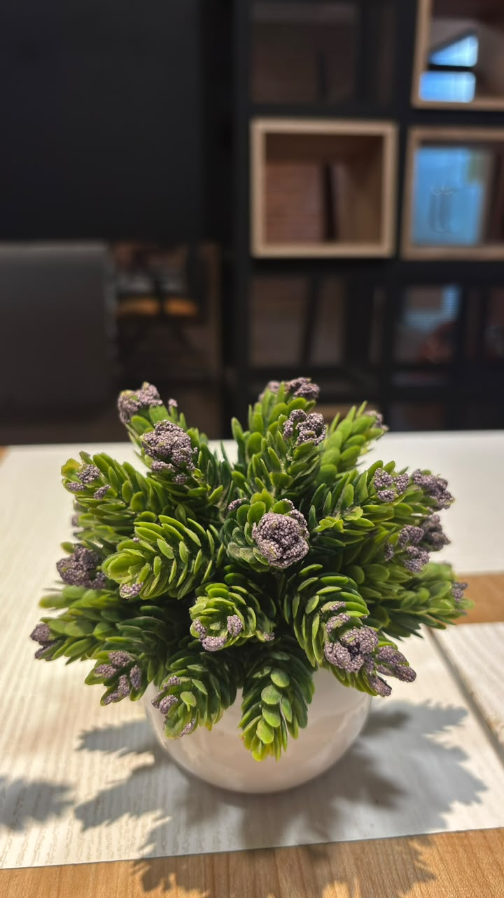
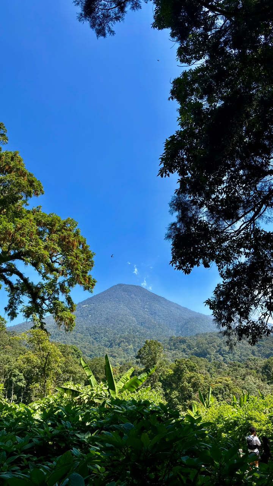
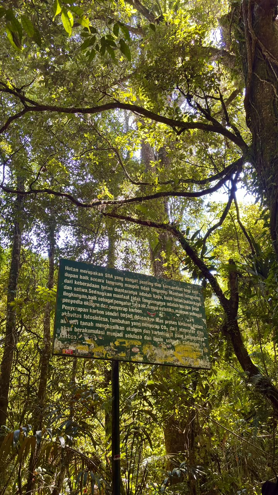
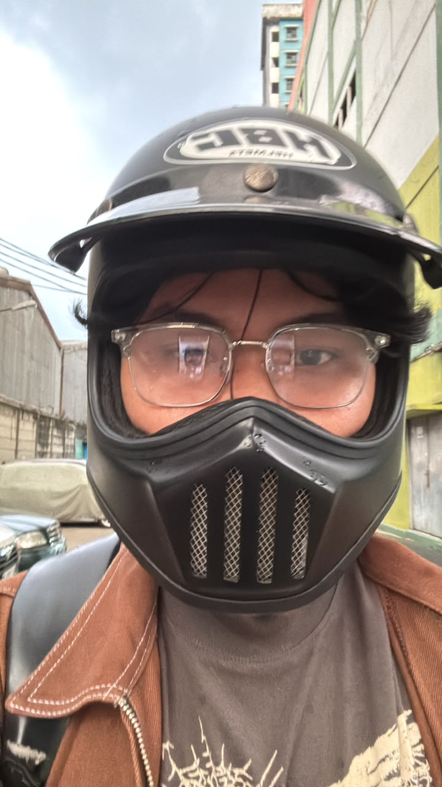

LANGUAGES
C++, HTML5, CSS3 · Python & Dart
Mahasiswa aktif Semester 7 yang Berfokus pada Web Development, Software Engineering dan Data & System Development.



Software Engineering, Web Development, Data & System Dev
Mahasiswa Teknik Informatika Universitas Nasional Jakarta yang berfokus pada Web Development, Software Engineering, Data & System Development.
C++, HTML5, CSS3 · Python & Dart
Flutter Dev
MikroTik RouterOS
MySQL & Firebase
SEO Optimization
Figma, Canva, MS Office
Problem Solving · Attention To Detail · Teamwork & Comm · Adaptability · Time Management
RBAC Access Control · RESTful API Architecture · MySQL Database · Auto Email System
Riset Keyword · +45% Visibilitas · Technical SEO · Trafik & Konversi
Strategi Penjualan · Sponsorship · Koordinasi Danus · Transparansi Kas
Aspirasi Mahasiswa · Tutor Sebaya · Kelompok Belajar · Forum Diskusi
Mentoring Skill · Workshop Ngoding · Coding Challenges · Pameran Proyek IT
Ruang kecil untuk cerita di luar layar.



